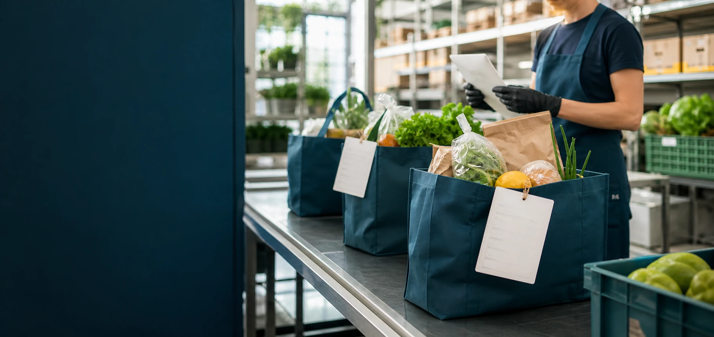

Fulfilment workspace
Orders
From basket to packing bench
Every fresh order, clearly prioritized.
Review confirmed baskets, substitution requests and packing deadlines before each delivery window closes.


PICK NEXT
Produce-first baskets
Eight orders contain delicate greens and berries. Pack them after ambient goods to protect freshness.

COLD CHAIN
Chilled items staged
Dairy and frozen products for route C are held at the correct temperature and ready to load.

CHECK
Bundle quantity alert
Three promotional snack bundles need a final quantity check before labels are printed.
Live order queue
| Order | Customer | Window | Basket | Picker | Status |
|---|---|---|---|---|---|
| #GR-5086 | Anita Rao | 12:00–12:30 | 12 items | Maya | Packing |
| #GR-5085 | Daniel Kim | 12:30–1:00 | 7 items | Arun | Substitution |
| #GR-5084 | Priya Shah | 12:30–1:00 | 18 items | Leah | Ready |
| #GR-5083 | Meera John | 1:00–1:30 | 5 items | Unassigned | Priority |